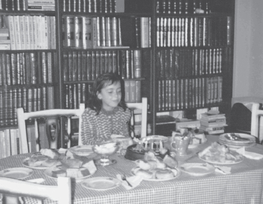
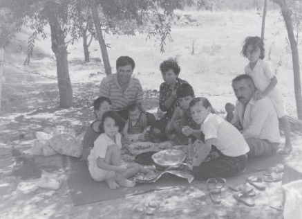

Cep telefonlarımız yoktu, ama yine de buluşabiliyorduk. Bir pastane, postane, park ya da bir durak buluşma yerlerimizdi. Önceden konuşur saati belirler, gider bekler ya da beklenirdik. İkide bir “geldin mi, nerdesin, yaklaştım, aha seni gördüm, sana doğru yürüyorum şimdi,” gibi saçma konuşmalar geçmezdi aramızda.
Kocaman jetonlarımız vardı. Telefon kulübelerinden jeton kullanıp dakikasını hesap edip konuşmalar yapardık. Şehiriçi görüşmeler için küçük, şehirlerarası için de büyük jetonlar olurdu. Bu jetonları genelde postanelerden veya kulübe yakınlarındaki seyyar satıcılardan temin ederdik.
En meşhur buluşma yeri, özellikle de İstanbul dışından gelenler için Ufi adında, neredeyse tek büyük alışveriş mağazasının önüydü. Büyük dediğime de bakmayın, şimdi en ufağı ondan daha büyüktür. Sonra Ufi, Huzur oldu, Ender oldu. Bir gelenek değişirken, Ufi de el değiştirmişti.
Çocukluğumuzda annelerimizin yanında, büyük anne ya da akraba ziyaretlerinden başka bir gezi türüne tanık olmamışızdır çoğumuz. O minibüse bin, ondan in otobüse bin, oradan gidilecek yere bağlı olarak vapura. Aktarma üstüne aktarma yapardık. Çoluk çocuk gidildiği ve yanımızda başka aileler de olduğu için epey kalabalık olurdu kadrolar.
Simit isteyenler, çişi gelenler, ağlayanlar, sıkılanlar her tipte oyuncu olurdu. Hiçbir olay yaşanmasa, birini araç tutar, kimi otobüsten, kimi vapurdan, kimi sıcaktan etkilenirdi. Sonunda istifra etmeden bir yolculuk tamamlanmazdı.
Bu gezmelere birçok sebep bulunabilir: Küçük kuzeninizin Kırk Uçurma zamanı olabilir, birinin ilk dişi çıkmıştır bu yüzden Diş Hediği kaynatılır, diğeri sünnet olacaktır, bir başkasının oğlu askerden gelmiştir, diğeri kızını kocaya vermiştir, öbürleri düğün yapmışlar, ona katılamadıkları için hediyelerini elden götürmek lazımdır, bir cenaze vardır, taziyeye gidilir, diğerleri yeni bir araba almıştır o kutlanır, diğeri loğusa yatağındadır, gidelim de bir Loğusa Şerbeti içelimdir.
Biraz büyümeye başlayınca artık annelerle gezmek zul gelmeye başlar, “ben evde kalırım,”, “olmadı arkadaşım Serkan’ı çağırırım bize,” gibi sözler söylerdiniz. Babaların karıştığı gezmelerde bu biraz daha geç bir zamana kalırdı. Artık iyice büyüdüğünüzde ise kendi başınıza gidecek, gidilmeyecek yerlere karar verme zamanınız gelmiş olur.
En sıkıcı gezmeler Bayramlarda yaşananlardır. Mecburi bir tutum vardır burada. Sırasıyla herkese gitmek zorundasınızdır. Sebep: Ne derler?
Bir yerlere gitmeme özgürlüğünü kazanma vaktinizin gelmesini beklersiniz.
Bu sıralar toplu halde sinemalara, plajlara ve pikniklere gitme zamanı gelmiştir. Her yere bir sürü halinde gitme anlayışı hakim olur genç dimağlarınızda. Anne-babadan, küçük kardeşlerinizden ayrılırken, arkadaşlarınızla gitmeye başlarsınız her yere.
Bunların haricinde planlı olarak yapılan bir yerlere takılma eylemleri başlar. Şimdi aşağıda bu gibi yerlerle ilgili sahneler olacak:
Çay Partileri: Çocukluktan delikanlılığa (kızlar için de geçerli,) geçtiğimiz vakitler Türkiye’nin neredeyse ilk büyük alışveriş merkezi Galleria açılmıştı. Bütün günümüzü orada geçirmek gibi bir adet edinmiştik. Okuldan kaçıp kaçıp burada alıyorduk soluğu. Arada bir yer kavgaları bile olurdu. İşte bu Galleria’nın yakınında Regata adında marinanın da hemen yanında bulunan bir eğlence mekanı vardı. Burada gündüz saatleri çay partisi diye garip bir eğlence anlayışı geliştirmiştik. Okulda gizli gizli biletler satar, hafta sonlarına bırakılan partiler düzenlenirdi. Organizatörlük yapan arkadaşlar bu işlerden para da kazanırlardı.
Burada da eğlence diskolardan pek farklı değildi. Yine acayip şekilde danslar edilir, eğlenmeye çalışılırdı. Ne olacaksa!
Sevgili olanlar için çok güzel saatlerdi buralarda eğlenmek. Hem gövde gösterisi yapılır hem de dans için partner aramaya gerek kalmazdı.
Doğum Günleri: Bu yıllarda doğum günleri farklı bir şekilde kutlanırdı. Daha basit, daha sade, ebeveynlerin muhakkak olayın bir yerine müdahil, limonatanın düğün salonlarında olduğu gibi, olmazsa olmaz içecek, en güzel kıyafetlerin sergilendiği ve günlerce öncesinden hazırlıkların yapıldığı bir çalışma ile gerçekleşirdi.
Şimdilerde olduğu gibi alınabilecek hediye çeşidi bol ve çoluk çocukta bu kadar para yoktu. Ayrıca çeşit çeşit pastaların olmadığını da söylemek gerekir. Bildiğimiz uzun baton pastalar vardı sadece. Onların da tazesini bulmak maharet isteyen bir durumdu. Doğum gününden günler önce en yakın pastaneye doğum günü pastası siparişi verilir, sonra beyaz ağır bir kremadan oluşan ve üzerine kırmızı ya da pembe şekerlemeden mamul bir gül kondurulmuş pasta gidip alınırdı.
İçecek çeşitleri de kısıtlıydı. Coca Cola o zamanlar yine en revaçtaki içeceklerdendi, ancak o da aslında o zamanlar pahalı sayılabilecek bir üründü. Orta halli bir ailenin bütçesi birkaç şişe kola almayı kaldıramayabilirdi, bu sebepten olacak, genelde anne imalatı olan, limonatalarla idare edilirdi.
Doğum gününe davet edilecek arkadaşların ya da doğum gününe gidilecek arkadaşın, aile tarafından daha önceden tanınıyor olması gerekirdi. Doğum günü partisi düzenlemek veya katılımcı olarak bulunmak için bile, günler öncesinden aileden izin koparılmaya çalışılırdı.
Doğum günü partisine kızların erkek arkadaş çağırması, erkeklerin de kız arkadaş çağırması pek doğal bir durum sayılmazdı ve hoş karşılanmayabilirdi. Yani, sizin anlayacağınız her cins esasında kendi cinsleri ile kutlardı doğum günlerini.

Kız kardeşim Gökçe Bedriye’nin 6. doğum günü partisi! 1984
Bu yine iyi olan haldir. Bazıları arkadaş da çağıramaz, aile arasında verilen çay ve börekle geçiştirilirdi bu mutlu(!) günleri.
Hediye için de şöyle bir yol izlenirdi; anneler o gün evde ne varsa, mesela bir havlu çorap, (paketinde,) bir kalem (kullanılmamış veya az kullanılmış olabilir,) ya da yine okunduğu belli olmayan bir kitap koyarlardı hediye olarak. En fazla da yap-boz modası vardı galiba.
Partilerin içeriğine gelecek olursak, en güzel şekilde giyinmeye çalışır, dans etmeye hazırlardınız kendinizi. O gün beğendiğin (âşık olduğun,) kıza dans teklifi yapmak için en uygun zemin hazırdır. Bunları düşünerek gidersiniz, sonra arkadaşların eşek şakaları arasında utana sıkıla teklifinizi yaparsınız. Ya kısmet! Baktınız karşı taraf kabul etti, dünyalar sizin olur. Baktınız cevap olumsuz, hemen çirkefliğe başlamanız gerekir.
Müziksiz olmaz. Sterio teypte zamanın en meşhur şarkıları çalar, (Stevie Wonder doğum günlerinin adamıdır,) slovlar geçer gider, sonra ne yapılacak? Tabii ki Hakan Gündüz dinlenip gülünecek, eğlenilecek. Ondan sonra sıra gelir Lambada veya Break dans yapmaya ki, en fazla primi bu dansları becerenler kapar.
Sonrasında partide hazır bulunanlar arasında günlerce bu konuşulur, davet edilmeyenler ya da izin alamayanlar çatlatılır, patlatılır.
Mektup: Günlük hayatta kullanmadığımız, daha doğrusu artık gerek duymadığımız, atalarımızın kullandığı iletişim aracı.
Bize nasıl Kızılderililer’in dumanla haberleşmesi veya posta güvercinleri garip geliyorduysa, şimdikilere de mektup garip geliyordur diye düşünüyorum.
Zamanın en güzel haberleşme yoludur ki, benim en iyi hatırladığım asker mektuplarıdır. Normalde pek görüşülmeyen ya da hayatınıza dair pek bir hatırası olmayan yakınınız askere gider, ilk yaptığı şey size içli, hüzünlü bir mektup yazmaktır. Mektup bitmek üzereyken tekrar selam edip ellerden öpmenin yanında, sürekli notlar bulunurdu. Konu esasta paradır. Bunu bütün zamana yaymak yanlış olabilir, bu bizim için rastlantı da olabilir.
Mektup aslında samimiyeti en fazla içinde barındıran, insanın duygusal yönlerini göstermesine neden olabilecek bir haberleşme yoludur. Şimdiki e-posta ya da telefon mesajlarından bilmem kaç kere daha içten olduğunu düşünürüm. Özellikle Ahmet Turan Alkan’ın “Üç Noktanın Söylediği” (Ötüken Neşriyat) adlı kitaba da adını veren makalesini okuduktan sonra mektuplara karşı daha derin bir muhabbet beslemişimdir.
Her mahallenin bir postacısı olur, o mahalleliyi, mahalleli onu tanırdı. Siz ona “Şundan mektup geldi mi?” diye sorduğunuz için olacak, postacı “Hadi teyze, gözün aydın asker ağa mektup gönderdi,” diye müjde verebilirdi.
Posta kutuları her apartmanda bulunmadığı için, postacı aşağıdan zile basar ve “Postaaa!” diye bağırarak, geldiğini haber verirdi. Hemen koşup, kimden ne geldiğini öğrenmek üzere meraklı gözlerle aşağıya iner, size gelen bir şey var mı diye bakardınız.
Tabii o zamanlar bizim gibi bilinçsiz, hesapta pul koleksiyonu yaptığını zanneden tipler, özellikle yurtdışından gelen mektupların pullarını itina ile yerinden çıkarmaya çalışıp, boşu boşuna kendimizi yorardık. Bilirsiniz, o zamanlar hemen herkesin Almanya’da dayısı, halası, teyzesi, muhakkak birileri olur, onlar da buradakilere mektup gönderirdi.
Bunların haricinde bir de mektup arkadaşlığı diye bir olay vardır ki, burada genelde yabancı ülke çocuklarıyla bir tür tanışma sağlanır ve bunlar birbirleriyle yazışarak arkadaşlık kurarlardı. Bu konu hakkında sadece bu kadar bilgi verebilirim. Evet yapılmıştır, ama ben yapmadım, yapamadım.
Kartpostal: Bir zamanlar günün şartlarıyla da alakalı olarak pek revaçta olan bu ürünler, zamana uyarak, kademeli bir şekilde kaybolmuş, sonra unutularak ortadan çekilmişlerdir.
Cep telefonları, kısa mesajlar, ve e-postalar derken, insanlar mektuplaşmaktan, bayram ve yılbaşlarında birbirlerine kart göndermekten uzaklaşmışlardır. Oysa bir zamanlar çocuğu doğan, sünnet ettiren, evlendiren, okul bitirdiklerinde ne vakit özel bir şey yaşanır, insanlar bunu tanıdıklarına biraz da kartlar üzerinden haberlerdi.
Neredeyse tüm meydanlarda bu kartpostallardan satılırdı. İstasyon önlerinde, postane yanlarında, duraklarda yani nere kalabalıksa her bayram ve yılbaşından önce buralarda satış yapanlar olurdu.
En çok da, zamanın ünlülerinin resimleri olan kartlar tutulurdu. Ünlü resimlerinden sonra, manzara ve şehir resimleri çok satardı. Kartlar, hemen hemen aynı ölçülerde idi. Sonradan çeşit ve ebatlar oldukça çoğalmış, davetiye gibi olanları çıkmıştır. Üzerinde sim olanı mı ararsınız, eğip büktükçe değişen resimlileri mi, katlananları mı? Onlarca modeli yapmışlardı.
Telefon İşletmeciliği (Sapıklığı): Bu köklü geleneğimizden önce, Türkiye’nin o yılları ve az öncesi için telefonun ne demek olduğu hakkında biraz hatırlatma yapmak iyi olur.
Her şeyde olduğu gibi telefonun gelişi de bazı olayları peşinde getirmişti. Telefon görüşmlerinde alt kültürler olduğu gibi telefon hattı sahibi olabilmenin de kuralları vardı. Her isteyen istediği vakit bir telefon sahibi olamazdı. Bir telefon müraacatının gerçekleşmesi on yıl sonrasına gün verilerek yapılıyordu. Doktorlara bu konuda öncelik tanındığı ise bilinen bir şeydir.
Herkeste telefon olmadığı için daha önce televizyon sahibi olanların yaşadığı sıkıntıyı bu sefer de telefon sahibi olanlar yaşamıştı. Konu-komşunun aramalarından ya da aranmalarından bıkılmıştı. Bizim de bu konuda bir hikayemiz vardır:
Daha önce babamın iş değişikliği hakkında bilgi vermiştim. Kitapçılığa başlarken hava parası adı altında bir bedel ödemişti dükkân sahibi olmak için. Rakam vermeyi uygun görmediğim için yüzde hesabı daha iyi olacak. Dükkân için ödenen bedelin %35’i kadar da telefon için para ödemişti. Evet tam oranı %35 yani bu derece pahalıydı telefon sahibi olmak.
İş yeri olduğu için daha fazla ihtiyaç duyuluyordu. Bu nedenle konu-komşudan çok çekmiştik.
Şimdi geçelim telefon işletmeciliği adıyla anılan eylemleri anlatmaya. O çevirmeli telefonlar, bazı ev ya da işyerlerindeki yerlerini tuşlu telefonlara devretmeye hazırlandığı zamanlar, artık çoğu insan telefon sahibi olmaya başlamıştı. Bu zamanlara denk gelen devirlerde telefon sapıklığı olayı baş göstermiş ve kimse uzun zaman bunun önünü alamamıştı. Öyle bir hal almıştı ki bu durum, insanlar artık yılmıştı saçma sapan konuşmalardan veya ikide bir ayaklanıp, boş dönmekten.
Bu tür insanlar, resmen bir meslek haline getirmiştiler telefon sapıklığını. Gerçi bazen çok komik şeylerin olduğu da bir gerçektir. Aynı zamanda yaşı o zamanlar uygun olan çoğu kimsenin, deneme bile olsa yaptığını düşünürüm. Misal ben, böyle şeylerden hiç hoşlanmayan, düşmanı olan bir tipken, arkadaş kurbanı olup, yapmışlığım vardır.
Bazı klasik numaralar vardı, bunlardan birini anlatayım: Bir kişi rastgele bir numara çevirir, telefona çıkan şahısa, “Kemal Bey orada mı?” diye sorar. Arkasından bir başkası aynı soruyu sorar, sonra bir başkası. Artık telefonun diğer ucundaki insan sıkılmaya başlamıştır. En son telefon açan kişi, “Ben Kemal, beni arayan var mı?” diye sorarak, karşı tarafı sinir ederdi.
Bir yumurta sorusu vardır ki klasiklerden, burada yazmasam daha iyi. Neyse işte bir devirdi geldi geçti. Gerçi numaraları gösteren telefonlar ya da cep telefonları yetişmeseydi, bu dönem çok daha uzun sürebilirdi. Yerini başka türlü sapıklıklara bıraktı, kendisi gitti.
Yılın Sevilen Şarkıları: Genelde okul önlerinde satılan, siyah-beyaz baskılı, ara sıra şarkıcıların fotoğraflarıyla süslenen bu tek formalık şarkı sözleri kitapçığı pek tutulmuştu. O yıl çıkan ve çok tutulan şarkı sözlerinin yer aldığı bu kitapçık, bizim gibi her şarkıyı ezberlemek isteyen çocuklar için bulunmaz bir nimetti.
O vakitler, kasetlerde öyle şarkı sözleri ya da kime ait bir şarkı olduğu hakkında bilgiler verilmezdi. Kasetin üstünde sarkıcının ya vesikalık ya da öylesine bir pozunu yer aldığı bir fotoğraf olurdu sadece. Arka tarafına baskı yapılmaz, boş olurdu. Kasetleri dinlerken durdurarak ya da çok sık dinleyerek öğrenirdik sözlerini. Birkaç sefer benim de almışlığım vardır. İyi bir hizmetti o zamanlar için.
Teravih Namazı Yerine Okey: İlk gençlik zamanlarımıza gelen günlerde Ramazan yaz günlerine rastlardı. Teravih namazları da dolayısıyla geç saatlerde olurdu. Namaza gidiyoruz diyerek evlerinden çıkan gençler, ailelerinden aferin alırken, az sonra oturacakları kahvede kim kimle eş olacak münakaşaları yaparlardı. Sonrasında kahveye gidilir ve başlanırdı okey oynanmaya, arada yapılan namaza ait muhabbetlere gülüşürken, namazı geç kıldıran kahvehane sahipleri daha çok sevilirdi.
Zıt! Erenköy: Seksenli yılların unutulmaz geyiklerinden biridir. Daha ziyade gençler ve çocuklar arasında kendine yer bulmuştur. Yanınızdakine anlamsız bir şeyler söylerdiniz (abızıttın mı? vb.) o ne olduğunu anlamak için sorduğunda da “Zıttttt errenköy” derdiniz. Anlamsız, saçma şeylerden biriydi aslında, ama epey bir süre gündem meşgul etti. Sadri Alışık filmlerinde de rastlamışızdır.
Olayın esası şudur; zıt Erenköy, sadece Erenköy istikametinin tersini söylemek için kullanılmıştır.
Laf Atma: Bu konu o zamanlar için önemli bir başlıktır. Bu işi sanat haline getiren insanlar vardı. Bundan kastım, kadınlara yapılan sözlü tacizi anlatmak. Ancak her türlü laf atmalara örnek vermek yerinde olacak diye düşünerek, “Ayakların yürüyor”, “Tekerler dönüyo abi”, “Hişt! Hişt! Demekle bakmak mı lazım?” gibilerini de eklemeliyim. Gerçi sadece kızlara söylenmesi şart olmayan bir laf atma şeklidir bunlar, ama jargonda ağır yerleri vardır.
Bundan sonra “sssssssss” sesi çıkarılarak bir kadının arkasına takılır, artık rahatsız olduğunu anlayıp, kadın tam arkasına dönerken, “...sssşivepssss” diye tamamlanırdı. Bir içecek markası olan bu kelimenin böyle kötü emellere alet edilmesi hiç yakışık alır bir tutum değildir. Daha başka şeyler de vardı. Tam hatırlamamakla birlikte, yine tonlamaların önemli olduğu; “...yyavvrrru Vatan Kıbrıs’ın, fısstık yiyen kızzları...” Gerçekten yaratıcılık gerektiren sözler içeren, laf atmayı sanat haline getiren bir kesimin elinde değerlenen şeylerdi bunlar.
Ve o zamanlar (ki şimdi de geçerlidir belki) öyle sıradan bir şeymiş, normalmiş gibi algılanırdı. Hatta bu çokbilmiş erkekler, kadınların aslında laf atılmasından çok hoşlandığını da iddia ederlerdi.
Ben bir türlü beceremedim bu işi. Ne orijinal bir şeyler buldum söyleyecek, ne de utangaçlığımı yenebildim. İşin doğrusu, onca laf atmanın devamı nasıl olabilir ki diye düşünmekten kendimi alamadığım için bu eylemde kendime uygun bir yer bulamamış olabilirim.
Mesela; “Hişt! Yavrum ayağına paspas olayım,” diyen birine, laf atılan kişinin, “E buyur” deyip, el ele oradan uzaklaşabileceğini bir türlü hayal edemedim. “Sulak yerde mi büyüdün anam!” diyen birine, memleketi hakkında bilgi veren birini de düşünemedim. Belki o yüzden bu kültürden uzağım.
Buraya kadar anlatılanlar laf atanlarla ilgili idi. Bir de bunların karşılığı olarak, tacize uğrayanların gösterdiği tepkiler vardır. Bazen lafı atan terbiyesiz adamı bile utandırabilecek şekilde gelen bu karşı sözleri burada yazmaya terbiyem müsaade etmiyor. Genelde verilen cevaplar ise ders verir niteliktedir. Örnek: “Senin anana, bacına böyle söylense güzel olur mu?”
Zamanın moda şakalaşmalarından biri de budur: “Elden gel, evlen de gel!” Şimdilerin “Çak!” deyip, ellerini birbirine çarpmasına benzerdi. Karşındaki kişiye, elini uzatıp, “Elden gel!” derdin, o sana elini verdiği anda çekip, “Evlen de gel!”diyerek, başlardın gülmeye. Anlamsız hatta saçma bir şeydi. Kim çıkarır? Niye çıkarır? Neden tutar? Bilinmez, ama uzun zaman kullanıldı.
Ekmek Kızartıp Yağ Sürmek: Merkezi ısıtma sistemlerinin pek olmadığı, hatta kaloriferli evlerin bile lüks olarak görüldüğü yıllardan bahsediyorum. Evlerde çeşitli şekillerde ısınma yöntemleri uygulanırdı. En yaygın olanı, odun ya da kömür yakılan sobalardı.
Gevrek ekmeği orada öğrenmiştik. Sobanın üstüne koyup veya küllerin boşaldığı ağzın olduğu bölüme ekmekleri bir çatal ya da bıçağın ucuna takarak kızartırdık. Kızaran ekmeklerin üstüne “Sana Yağ” sürüp üzerine tuz dökmek kadar lezzetli bir tat yoktu.
Ana yemeklerin haricinde bir açlık hissettiğinizde, hemen sobanın başına geçer bir miktar ekmek kızartıp yerdiniz. Bu tabii ki kışın yapılacak bir uygulamaydı. Kış meyveleri yediğinizde ev güzel koksun diye bu sefer soba üstüne mandalina, portakal kabuğu koymak kış geleneklerindendi.
Atari Salonları: Bir dönem öyle yaygındı ki bu salonlar, okuldan kaçan çocuklar hep buralara takılırdı. Aslında Atari salonlarına gitmek için okuldan kaçılırdı, demek daha doğru olabilir.
Aynı yerde yaş aralığı epey geniş olan tipler takılır, sigara dumanından göz gözü görmez, onca insanın gürültüsünden kimsenin birbirini duymadığı bir ortam yapılırdı. Oyun başında uyuya kalan çocuk haberleri çıkardı gazetelere.
Aileler nefret ederdi bu yerlerden. Hatta lüzumsuz olarak gördükleri bilgisayar başında vakit geçirme eylemine “Ne o Atari mi oynuyorsun?” sorusunun kaynaklarından biri de bu salonlardır. Nice ebeveyn çocuklarının kulağını çekerek buralardan toplayıp evine götürmüştür. Kulağı çekilen çocuk ise biraz utanıp, biraz da korkarak yamuk yumuk bir vaziyette anne-babasının yanında yola devam etmiştir.
Bu salonlar ilk açıldığında farklı söylentiler olsa da esas oğlanın River Raid, ama oyunların babasının da Street Fighter olduğu bir gerçektir. Ya da bu benim gerçeğimdir.
Aslında bu oyunlardan herhangi birinin bir işe yaradığını, bir zekâ gerektirdiğini söyleyemeyiz. Ancak el-kol becerisi ve biraz hız gerektirirdi. Bir de tabii ki oyunları geçen insanları seyretmek.
Buralarda iyi oynayan birinin yanınıza gelip sizi seyretmesi kadar rahatsız edici bir durum yoktur. Pek bilmiyorsanız seyredilmek iğrençtir. Siz oynarken “Abi geçiiim mi, abi?” diye tepenizdeki adamlardan birkaçı sorar, buna sinir olurken bir kere daha yanardınız. Tek jetonla oyun bitirdiğinizdeyse havanızdan geçilmez, itibar hat safhada olur ve artık eve bir Sega alma vaktinin geldiğine karar verirdiniz.
Eğer bu salonlar kapanmasa çok kişi oralarda yaşlanacak, belki çoluk çocuğa bile karışamayacaktı. Neyse ki, evlere bu tür nesneler girdi de çocuklar yuvalarına geri döndüler. Ve onlar şimdi baba, amca, dayı oldular. Kızlar pek takılamazlardı buralara, ortam müsait değildi.
Diskolar: Serpil Çakmaklı, Ahu Tuğba filmlerini hatırlamakta, hatırlatmakta fayda mülahaza ediyorum. İşte o filmlerin en önemli öğelerinden biri de diskolardır.
Seksenli yıllarda diskoya gitmeyen adam, adam yerine konmazdı. O yuvarlak, yanıp sönen ışıklı avizenin (Bu avizeler Diskoların demirbaşı olup onlarsız bir disko düşünülemez,) altında deliler gibi dans etmek çok mühim bir iş sayılırdı.
Diskoların bir de gündüz matineleri olurdu. İçkisiz, zararsız ama eğlencesiz zamanlarını temsil ederdi. Seksenli yıllarda gençliğini yaşamış olanların tanışma, dokunma, dans etme mekânıdır buralar. Sonraları her şeyin olduğu gibi diskoların da nesli tükenmiştir.
Aslında buralar, bir dönemin eğlence kültürünü açıklaması bakımından korunması, yaşatılması gereken yerlerdendir.
Diskoda insanlar saçma bir şekilde kollarını oraya buraya sallar, abuk subuk şekilde öne arkaya hareket ederler, filmlerden öğrendikleri birkaç figürü arkadaşlarına gösterir, sonra bu hareketlerin aynısını tersten yaparak arkadaşından uzaklaşır, sonra tekrar yakınlaşırdılar.
Diskoların kendilerine ait kuralları vardır. Oraya giren herkes deli gibi içmeli, acayip hareketler sergileyerek dans etmelidir. Garip kahkahalar atıp, eğlenmese bile eğleniyor görünmelidir. Yorulup da masalara geçildiği vakit, şen kahkahalar atılıp, bardaklar tokuşturulmalıdır. İçeriye sonradan giren ve şekli ortama uygun olmayan tiplere bakıp, dalga geçilmeli, gülüşülmelidir. Her diskoda muhakkak bir kavga, hadi olmadı ufak da olsa bir tartışma, bir itişip kapışma yaşanmalıdır.
Unutmadan, yerli filmlerin disko ortamına kattığı şeylerden biri de bu ortamlarda kesinlikle, esrar, eroin satan tiplerin de bulunduğu ve genç dimağları yoldan çıkarmak için göstermiş oldukları çabalardır.
Lunapark: Ben pek sevemedim bu mekânları, hep çok kalabalık, hep çok gürültülü gelmiştir. Bunları söylememe rağmen ben de her çocuk gibi, bayram seyran olduğu zaman lunaparka gitmişimdir. Seksenli yılların eğlence modeli olan yerlerden biri de bu lunaparklardır.
Şimdilerdeki gibi neredeyse mahalle aralarında bile göreceğimiz dev alışveriş merkezleri ya da eğlence merkezleri yoktu. Şimdikilerin yanında gariban, belki de ilkel sayılabilecek şartlarla hazırlanan oyunları oynamak, çemberleri direklere ya da sigara paketlerini içinde kalacak şekilde tutturmaya çalışmak o zamanın insanına pek zevkli gelirdi.
Lunaparklarda yaşanan kazaları anlatılırdı her zaman, zincirli salıncakların kopması ve düşenler, gondol sallanırken, önde bulunan demirin yerinden çıkması gibi.
Neler yoktu ki bu mekânlarda, atlı karınca, güldüren aynalar, korku tüneli, balerin, tüfek atışı, gondol, zincirli salıncak, dönme dolap... ve daha bir sürü şey.
Ve bir sürü de anlamsız gelen şeyler doluydu. Özellikle, zamanın kahramanlarının resimleri olur ve bunların yüzlerinin geldiği bölüm boştur. İşte bu boş olan kafa yerlerine kendi kafalarını sokup resim çektirenler çok komik gelmiştir. Hatta hep merak ederim o resimleri çektirdikten sonra saklayan var mıdır diye.
En fazla sevilen şeylerden biri, langırt oynamak, diğeri de çarpışan arabalara binmektir. Langırtın kendine ait bir kültürü vardır ki bunu hemen hepimiz hatırlarız. Yöre ve şivelere göre farklılık göstermekle beraber, “Fırdöndü yok oğlum,” ya da “Fır fır yapma len!” denmeden bu oyun oynanmaz.
Çarpışan arabalara gelecek olursak, koca lunaparkta envai çeşit malzeme, belki onlarca çeşit oyun varken, bu arabaların başında araba sayısının on katı insan bekler, sıra kavgaları, jeton kavgaları olurdu. Çarpışan arabaların eğlence kültürü, karşıdan ya da yandan gelen araçlara, ister bilinçli, ister bilinçsiz olmak kaydıyla çarpışmak üzerine kurulduğu halde, insanların bazen, “ne çarpıp duruyon layn!” diyerek, birbirlerine saldırdıklarını görmüşlüğüm vardır. Esasta bir nevi Trafik Canavarlığı stajı gibi bir durumdu bu. İnsan çarpıp niye bu kadar zevk alır bir türlü anlamam. Ama şunu bilirim ki, o çocuklar o arabaların içindeyken kenarda bekleyen bizler onlara bakıp sinir olurduk. Bir de siz çarpışan arabayı kullanırken yanda sıra bekleyen tipler vardır size öyle bir bakarlar, işte onlardan ödüm kopardı. En fazla hatırladığım bunlardır. Yer kavgası yapmak, anlaştığınız birinin aracını sürekli takip etmek, yerinizi birine kaptırmak korkusu, esas olan çarpışan araba oyunundan daha hareketli ve zor bir oyundu aslında, ama bunu hâlâ fark edemedik.
Piknikler: Konu komşu toplanır, günlerce önceden hazırlıklar yapılır, kim hangi araçla gidecek, gerekirse minibüs kiralanır, kim ne getirecek kararlaştırılırdı. Biz genelde Belgrat Ormanları’na ya da Beykoz tarafına giderdik. Ama Gülhane Parkı da tercih edilen piknik yerlerindendi. Buralara ulaşıldığında pikniğin her türlü kuralı yerine getirilir, ne gerekiyorsa yapılırdı. Kızlar-kadınlar- yakan top, erkekler futbol oynamak isterlerdi. Yakılan mangallar dumanıyla beraber kokusunu etrafa yayarken, erkekler birbirlerine “Ben daha iyi yakarım mangalı,” diyen bakışlarıyla hava atarlardı.

İki dayım, yengem ve kuzenler piknik yaparken.
Mavi ya da beyaz küçük tüpler yakılır, kadınlar bir yandan rüzgârı engelleyip çay demlemeye çalışırken, bir yandan salata hazırlarlardı. Küçük tüplere “Piknik Tüp” denmesinin sebebi pikniklerde göstermiş oldukları performansla alakalıdır.
Yazlık: (Üvey Ev) Okulların bitmesine yakın zamanlarda herkesi bir tatil merakı sarar, yazlığı olanlara biz olmayanlar gıpta ile bakardık. O zamanlar her şeyde olduğu gibi, yazlıklarda da bir hava atma sebebi vardı. Çünkü herkes yazlık sahibi değildi, hatta tatil kültürü diye bir kültürden bile bihaber insanlardık çoğumuz. Tatilden anladığımız, memleketlerimize ailecek gidip, büyükanne veya dedelerimizi görmekti.
Yazlıkçılar genelde İstanbul’a yakın mekânları seçerlerdi. Kumburgaz, Silivri, Şarköy buraların başında gelirdi. Şimdi buradan bakınca Kumburgaz veya diğerleri o kadar yakınken neden aylarca orada kalıp gelmezlerdi veya niçin buradan oralara gidilmezdi, anlayamıyorum.
Okul açılıp siz bembeyaz teninizle hayatınıza devam ederken, bronzlaşmış tipleri görünce “İşte yazlıkçılardan biri daha,” diye geçirirdiniz aklınızdan. Sonra onlar başlardı yazlıklarından, bu sene yeni tanıştıkları arkadaşlarından, deniz maceralarından bahsetmeye, siz de bunları dinlerdiniz.
Bir süre sonra siz ya da yakınlarınız palazlanmaya başlar, önce onların yanına, daha sonra kendi yazlığınıza gitmeye başlardınız. Burada iki rolü de oynamak çok hoştur. Misafirken, ev sahibi her konuştuğunda size hava atarmış gibi gelir, fakat siz ev sahibi olursanız, misafirler incinmesin diye her zaman dikkatli davranmak zorunda kalırsınız. Halbuki kimse kasmasa, olacak bir şey yoktur.
Aslında ben ne yazlıkçılardan ne de yazlıkçı olmaktan hemen hiçbir zaman hoşlanmadım. Süreli arkadaşlıkları hiçbir zaman sevemedim.
Ev sahibi olduğunuz zaman, akrabalarınızın sizi ne kadar çok sevdiğini, özlediklerini anlardınız. Yazlıklar dedikodu mekânları gibi gelirdi bana, kimin kızı kimin oğluyla kırıştırıyor, şunun oğlu geçen gün şu saatte girdi eve, elinde de şu vardı muhabbetlerinin en sık görüldüğü yerlerdendir.
Komşu denilen insanlarla en fazla yüz göz olduğunuz yerlerdir yazlıklar. Genelde bu muhabbetler öyle dallanıp budaklanmaz, zararsızdır.
Balkonlar, mangal dumanını dağıtmaya çalışan baba figürleri ve mangal olmadığı zamanlar yıkanmış donlar ve mayolarla süslüdür. Tek eğlence mekânı, tepesi hasırla kaplanmış, adına bar ya da disko denen yerlerdir.
Bol içki içildiği akşamlar sahilde ateş yakılıp, “Akdeniz Akşamları” onun olmadığı zamanlarda muadili şarkılarla vakit geçirildiği yerlerdir.
Sonra bir de bu evler bütün kış boyunca boş durduğu için rutubet olur, örtüler toz olur, onları kaldır, öbürünü yerine koy falan derken, bütün yazın evin bakımıyla geçtiğini bilirim.
Akmayan sular, içecek soğuk su sıkıntısı, deniz anaları, sivri sineklerden bıkarsınız, komşu geyikleri ve yaptıkları gürültüden uyuyamazsınız. Boyuna okey ya da tavla partileri yapılır, hep yenen birileri ve karşısında yenilenler olur, onlarla dalga geçilir. Bu şeyler yaz bitene kadar devam eder. Her gün aynı şeyler konuşulduğu halde, neden hep aynı şeylere gülünür, bunu da anlamış değilim.
Yazlıklar bir iki haftadan sonra, aslında genç nüfusu sıkmaya başlar. Onlar için rüştlerini ispatlayana kadar yapılacak tek şey, yazın bitmesini beklemektir. Önceleri iple çekilen, hasretle beklenen yazlıklar, yaş ilerledikçe neredeyse nefret edilen yerlerden biri olur.
Yahya Kemal’in Ankara hakkındaki sözü çok güzel açıklar olayı. Onun söylediğine benzeterek:
Yazlıkların en güzel yanı, İstanbul’a dönüşüdür.